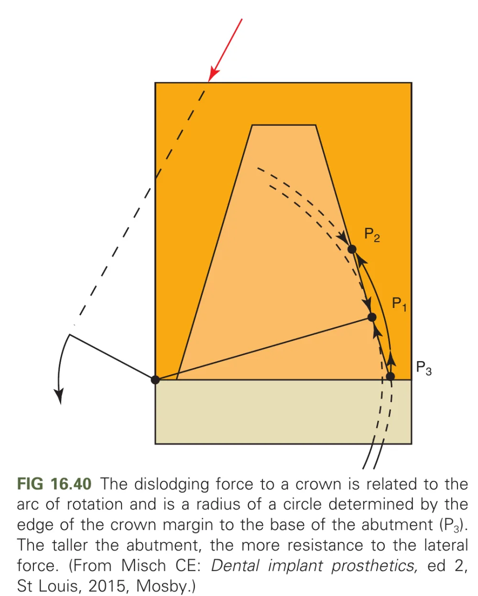
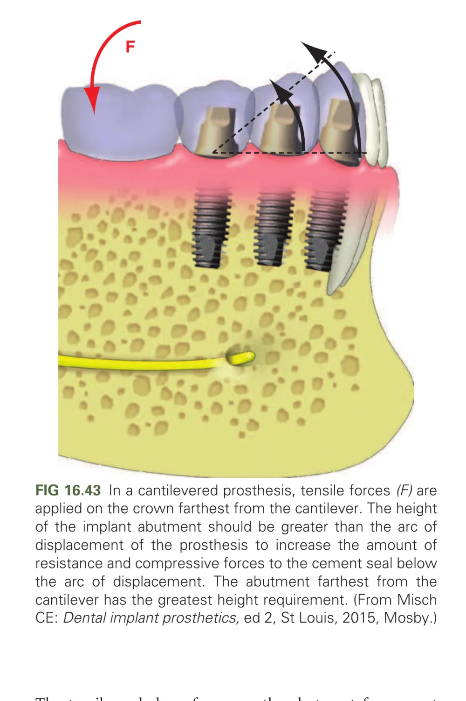

نسخه استخراجشده؛ ترجمه یا تأیید علمی انجام نشده است. وضعیت: captured
تا اینجا دربارهی «گیر» صحبت کردیم. اکنون مفهوم دوم و متفاوتی میآید: «فرم مقاومت».
تعریف: «فرم مقاومت یک اباتمنت، در برابر جدا شدن پروتز در جهتهای اپیکالی، مایل یا افقی مقاومت میکند.»
تفاوت را ببین: گیر در برابر کشیده شدن مستقیم به بالا مقاومت میکند؛ فرم مقاومت در برابر چرخیدن و اهرم شدن. و در دهان، بسیاری از نیروها مؤلفهی مایل یا افقی دارند.
و کدام نیروها فرم مقاومت را میآزمایند؟ «پارافانکشن، اسپنهای بلند، کانتیلورها، دندانهای طبیعی متحرکِ متصل به ایمپلنت، بارگذاری آفست، و بارهای افقی از تماسهای اکلوزالی.»
و چرا در ایمپلنت این مسئله جدیتر است:
«وقتی نیرویی درون مارجینهای تاج اباتمنت وارد شود، نیروهای اهرمی یا واژگونکننده محدودند. اما برای پروتزهای ایمپلنتساپورتد، نیروها اغلب دور از اباتمنت — معمولاً بهسمت فاسیال — تصویر میشوند.» و حرکات اکسکورسیو یک نیروی اهرمی میسازند، بهویژه بر اباتمنتهای قدامی ماگزیلا.
و اکنون مفهوم مرکزی این درس — قوس چرخش (شکل ۱۶٫۴۰):
«قوس چرخش تاج بر نیروهای جداکننده اثر میگذارد و از جهت نیروها اثر میپذیرد. طراحی سطح و شرایط تراش در دورترین نقطه از فولکروم یا نقطهی چرخش، مقاومت در برابر جدا شدن سمان را فراهم میکند.»
و دو عامل بزرگترین مقاومت را میسازند: «حداقل تیپر اباتمنت و حداکثر ارتفاع اباتمنت. هرچه اباتمنت بلندتر، مقاومتش در برابر نیروهای جانبی بیشتر.»
و اکنون یک قاعدهی هندسی دقیق که ارزش حفظ کردن دارد:
«ارتفاع اباتمنت در حالت ایدهآل باید بزرگتر از قوسی باشد که تاج هنگام چرخیدن حول یک فولکروم در مارجین سمت مقابل ترمیم میسازد.»
یعنی: تاج را تصور کن که میخواهد حول لبهی مقابلش بچرخد و بلند شود. آن چرخش یک قوس میسازد. اگر اباتمنت از آن قوس کوتاهتر باشد، تاج بهسادگی از رویش میچرخد و بیرون میآید؛ اگر بلندتر باشد، اباتمنت مسیر را سد میکند.
و واقعیت ابعاد بازار: «بیشتر ارتفاعهای اباتمنت ایمپلنت از ۴ تا ۱۰ میلیمتر است. برخی سازندگان تنها اباتمنتهای حدود ۵ میلیمتری عرضه میکنند تا در وقت تراش پزشک صرفهجویی شود.»
و بلافاصله یک هشدار: «اگرچه این ممکن است در برخی موقعیتها کافی باشد، یک کانتیلور یا پروتز ثابت با ارتفاع تاج بزرگ اغلب به اباتمنتهای ایمپلنت بلندتری نیاز دارد تا در برابر قوس خروج یا نیروهای جانبی در نواحی قدامی مقاومت کند.» و در موارد ارتفاع ناکافی، «در حالت ایدهآل باید یک اباتمنت اختصاصی برای افزایش فرم گیر و مقاومت ساخته شود».

در درس ۲ خواندی که اباتمنت پهنتر گیر بیشتری دارد. اکنون یک استثنای مهم:
«یک اباتمنت ایمپلنت با قطر پهنتر گیر بیشتری فراهم میکند ولی ممکن است مقاومت کمتری در برابر نیروهای گشتاوری نسبت به یک اباتمنت باریک با ارتفاع و تیپر مشابه ارائه دهد.»
و چرا؟ «اباتمنت پهنتر برای سمان محور چرخش بلندتری دارد و ناحیهی کاهشیافتهای از مقاومت در سمت مقابل تراش فراهم میکند.»
یعنی هرچه پایه پهنتر، قوس چرخش بلندتر میشود — و همان اباتمنتی که سطح بیشتری داشت، حالا باید بلندتر هم باشد تا از آن قوس بلندتر جلو بزند. پهنا، هم گیر میدهد و هم مطالبهی ارتفاع میسازد.
و نتیجه: «بدترین فرم مقاومت، یک اباتمنت کوتاه و پهن است — برای نمونه در ناحیهی مولر.»
و این وضعیت در بالین کم نیست: ایمپلنت پهن در مولر، با فضای بینفکی محدود که اباتمنت را کوتاه میکند. بدترین ترکیب، ترکیبی رایج هم هست. و راهحلش: وقتی ارتفاع اباتمنت مشکوک است، شیارهای جهتدار ریسک جدا شدن را کم میکنند.
و اکنون کانتیلور — با یک تعریف که اغلب اشتباه فهمیده میشود:
«یک ترمیم کانتیلورشده هم وقتی نیرو بر بخش کانتیلور اعمال شود، یک قوس خروج میسازد.»
و تعریف دقیق شعاع آن قوس: «شعاع قوس جابهجایی برابر است با فاصلهی تماسهای قدامی تا خلفی — نه فاصلهی A-P ایمپلنتها.»
این تمایز را در یونیت اوردنچر هم دیدی، آنجا با نام «کانتیلور پنهان». اینجا هم همان اصل: هندسهی پروتز را باید روی تماسها سنجید، نه روی ایمپلنتها. A-P spread را روی ایمپلنتها میسنجند؛ قوس جابهجایی را روی تماسهای پروتز.
و کدام اباتمنت بیشترین بار را میگیرد؟ «ارتفاع اباتمنت ایمپلنتِ دورترین از فولکروم یا کانتیلور، عنصر اصلی مقاومت است.» — یعنی نه اباتمنت نزدیک کانتیلور، بلکه دورترین آن.
و عددی که کانتیلور را جدی میکند:
«یکی از شایعترین عوارض کانتیلورها یک ترمیم جداشده است، که ممکن است تا ۶۰ درصد مواقع در ترمیمهای سهواحدی رخ دهد.»
شش مورد از هر ده. و گشتاور یا ممان خمشی حاصل از بریجهای کانتیلور یا سگمانهای بار (bar) میتواند به تخریب رابط، تحلیل استخوان، شل شدن پیچ پروتزی، و شکست ایمپلنت یا اجزا یا پروتز بینجامد.
و راهحل — که یک قاعدهی جهتدار زیبا دارد:
«نیروهای کششی و برشی بر اباتمنت برای گیر سمان، از بار (bar) کانتیلور خلفی یا پونتیکها، ممکن است با شیارهای عمودی روی جنبههای باکال و لینگوال اباتمنتهای خلفی کاهش یابد. در نتیجه، قوس جابهجایی و نیروی گشتاوری بهطور مکانیکی کاهش مییابد.»
و بار آفست، که اغلب وجود دارد: «ایمپلنتها اغلب مدیالتر از تماسهای اکلوزال یا انسیزال پروتز روکشکننده قرار میگیرند.» و هر دو شرط، بارهای آفست و نیروهای کششی و برشی بیشتر بر سمان یا پیچ میسازند. «بارهای آفست باکولینگوال، سمان را زیر کشش میگذارند، که ممکن است جدا شدن را افزایش دهد.»
و اکنون قاعدهی جهت شیار، در یک جمعبندی:
«وقتی کانتیلور به مزیال یا دیستال است، شیارها یا باکسها در تراش اباتمنت باید روی فاسیال یا لینگوال تراش باشند. وقتی کانتیلور به فاسیال یا لینگوال است، شیار یا باکس باید روی مزیال یا دیستال اباتمنت گذاشته شود.»
قاعده در یک جمله: شیار را در سمتی از اباتمنت بگذار که با جهت کانتیلور یا بار آفست زاویهی قائمه میسازد. شیار در آن سمتها قوس جابهجایی را تغییر میدهد و ریسک جدا شدن را کم میکند.
و همین ویژگیها وقتی نیروهای افقی از یک اکلوژن متقابلاً محافظتشده یا از برایکسیسم وارد میشوند، سودمندند.
